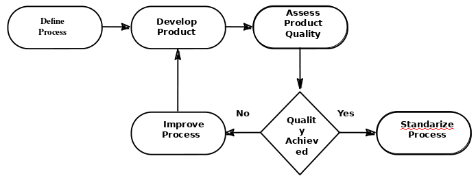
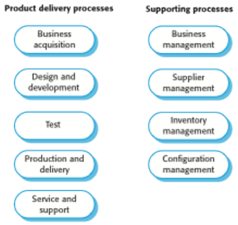
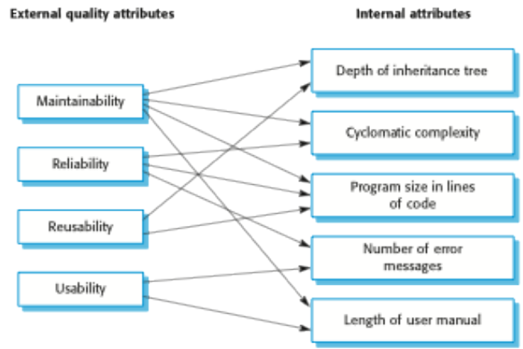
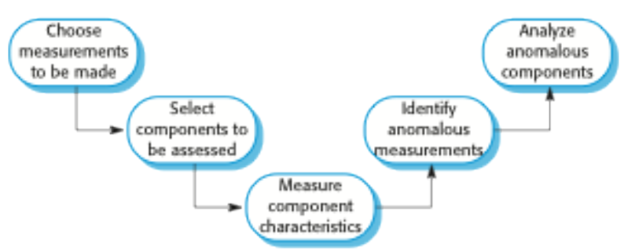
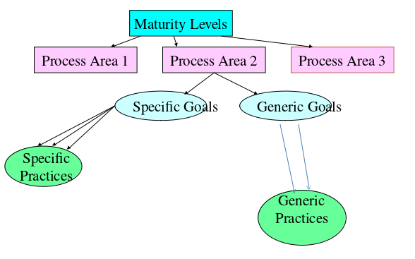

Software Engineering 3
Table of Contents
- 1. FAQ's
- 2. Software
- 2.1. Software definition
- 2.2. Software Engineering
- 2.3. Software Project Failure
- 2.4. Software Costs
- 2.5. Software Process Activities
- 2.6. Software Products
- 2.7. Good Software
- 2.8. System Engineering vs Software Engineering
- 2.9. Challenges of Software
- 2.10. Application Types
- 2.11. Software Ethics
- 2.12. Ethical principles Example on Google MyActivity
- 3. Process Description Template
- 4. Software Processes
- 5. Software Review Process
- 6. Quality
- 7. Inspection/Review and Associated Metrics
- 8. Software Metrics
- 9. Process Improvement
- 10. CMMI
- 11. For the Exam
- 12. Exam Question
- 12.1. CMMI
- 12.2. Explain how the principles underlying agile methods lead to the accelerated development and deployment of software.
- 12.3. Extreme programming expresses user requirements as stories, with each story written on a card. Discuss the advantages and disadvantages of this approach to requirements description.
- 12.4. Explain why program inspections are an effective technique for discovering errors in a program. What types of error are unlikely to be discovered through inspections?
- 12.5. Explain why it is difficult to validate the relationships between internal product attributes, such as cyclomatic complexity and external attributes, such as maintainability.
- 12.6. Explain how standards may be used to capture organizational wisdom about effective methods of software development. Suggest four types of knowledge that might be captured in organizational standards.
- 12.7. Assume you work for an organization that develops database products for individuals and small businesses. This organization is interested in quantifying its software development. Identify appropriate process and product metrics to do this and suggest how these can be collected.
- 12.8. When would you recommend against the use of an agile method for developing a software system?
- 12.9. Suggest four reasons why the productivity rate of programmers working as a pair might be more than half that of two programmers working individually.
- 12.10. It has been suggested that one of the problems of having a user closely involved with a software development team is that they 'go native'. That is, they adopt the outlook of the development team and lose sight of the needs of their user colleagues. Suggest three ways how you might avoid this problem and discuss the advantages and disadvantages of each approach.
- 12.11. Under what circumstances might a company justifiably charge a much higher price for a software system than the software cost estimate plus a reasonable profit margin?
- 12.12. Cost estimates are inherently risky, irrespective of the estimation technique used. Suggest five ways in which the risk in a cost estimate can be reduced.
- 12.13. What is the most important difference between generic software product development and custom software development? What might this mean in practice for users of generic software products?
- 12.14. Giving reasons for your answer based on the type of system being developed, suggest the most appropriate generic software process model that might be used as a basis for managing the development of the following systems:
- 12.15. Fixed-price contracts, where the contractor bids a fixed price to complete a system development, may be used to move project risk from client to contractor. If anything goes wrong, the contractor has to pay. Suggest how the use of such contracts may increase the likelihood that product risks will arise.
- 12.16. What are the important differences between the agile approach and the process maturity approach to software process improvement?
- 12.17. Describe three types of software process metric that may be collected as part of a process improvement process. Give one example of each type of metric.
- 12.18. Discuss, in relation to the ACM/IEEE Code of Ethics, the ethics of a company releasing software without disclosing known defects. Your answer should address each of the principles of the ACM/IEEE Code of Ethics. Justify any assumptions that you make.
1 FAQ's
What is Software?
Computer programs and associated documentation. Software products may be developed for a particular customer or may be developed for a general market.
What are the attributes of good software?
Good software should deliver the required functionality and performance to the user and should be maintainable, dependable and usable.
What is software engineering?
Software engineering is an engineering discipline that is concerned with all aspects of software production.
What are the fundamental software engineering activities?
Software specification, software development, software validation and software evolution.
What is the difference between software engineering and computer science?
Computer science focuses on theory and fundamentals; software engineering is concerned with the practicalities of developing and delivering useful software.
What is the difference between software engineering and system engineering?
System engineering is concerned with all aspects of computer-based systems development including hardware, software and process engineering. Software engineering is part of this more general process.
What are the key challenges facing software engineering?
Coping with increasing diversity, demands for reduced delivery times and developing trustworthy software.
What are the costs of software engineering?
Roughly 60% of software costs are development costs, 40% are testing costs. For custom software, evolution costs often exceed development costs.
What are the best software engineering techniques and methods?
While all software projects have to be professionally managed and developed, different techniques are appropriate for different types of system. For example, games should always be developed using a series of prototypes whereas safety critical control systems require a complete and analyzable specification to be developed. You can’t, therefore, say that one method is better than another.
What differences has the web made to software engineering?
The web has led to the availability of software services and the possibility of developing highly distributed service-based systems. Web-based systems development has led to important advances in programming languages and software reuse.
2 Software
2.1 Software definition
- Software: Computer program, documentation meets requirements
- Software comprises of:
- Planning
- User requirements/user stories
- Design
- Coding
- Testing
2.2 Software Engineering
- Is concerned with: theories, methods and tools for professional software development
- Is concerned with cost-effective software development
- Activities of software engineering: planning, requirements, design, coding, testing
- The economies of ALL developed nations are dependent on software
- More and more systems are software controlled
- Using appropriate theories and methods to solve problems bearing in mind organizational and financial problems
- Systems should be developed using a managed and understood development process (different processes for different types of software)
- Dependability and performance are crucial
- Managing an understanding the software specification and requirements
- Where appropriate - reuse software (especially in web-based systems)
- Incremental and agile development (especially in web-based systems)
2.3 Software Project Failure
- Increasing System Complexity: As new software engineering techniques help us to build larger, more complex systems, the demands change. Systems have to be built and delivered more quickly; larger, even more complex systems are required; systems have to have new capabilities that were previously thought to be impossible.
- Failure to use software engineering methods: It is fairly easy to write computer programs without using software engineering methods and techniques. Many companies have drifted into software development as their products and services have evolved. They do not use software engineering methods in their everyday work. Consequently, their software is often more expensive and less reliable than it should be.
2.4 Software Costs
- Are generally higher than system costs
- Costs more to maintain than to develop
- It is generally cheaper to use software engineering techniques and methods in the long run, since making modifications later can be expensive
2.5 Software Process Activities
Software Specification: Customers and Engineers define the software to be produced and the constraints on its operation
- The process of establishing what services are required and the constraints on the system's operation and development
- Requirements Engineering

- Software Development: Where the software is designed and programmed
- The process of converting the system specification into an executable system
- Software Design: Design a software structure that realizes the specification
- Implementation: Translate this structure into an executable program
- Design and Implementation are interleaved
- Programming: is an individual activity with no standard process
- Debugging: is the activity of finding program faults and correcting these faults
- Software Validation: Where the software is checked to ensure that it fulfills requirements
- Verification and Validation (V&V): Is intended to show that a system conforms to its specification and meets the requirements of the system
- Involves checking and reviewing processes and system testing
- System testing involves executing the system with tests made from the specification
- Testing is the most common V&V activity
- Testing stages are: Component testing, System testing, Customer testing
- Software Evolution: Where the software is modified to reflect changing customer and market requirements
- Software is flexible and can change
- As requirements change throughout changing business circumstances so must the software evolve.
- Change leads to rework and re-analysis, and thus a cost increase
- To reduce the costs anticipate change: for example, develop a prototype first
- To reduce the costs implement "change tolerance": this normally occurs in the incremental SDLCs, where the proposed changes may be implemented in increments
2.6 Software Products
- Generic products: stand alone, made for general public
- The decisions are made by the developers
- Customized: specific software e.g. embedded systems, interactive transaction-based systems (web apps)
- The decisions are made by the customer
2.7 Good Software
- Maintainability: Should be adaptable to change
- Dependability and security: Should not cause physical or economical damage. Malicious users should not be able to access or damage the system.
- Efficiency: Should not make wasteful use of resources. Should be: responsive, use processing time well, utilize memory well
- Acceptability: Must be understandable, usable and compatible with other systems
2.8 System Engineering vs Software Engineering
- Software relates to the software itself
- System relates to all the parts
2.9 Challenges of Software
- Documentation
- Life long learning
- AI
- Challenges with ethics
- Heterogeneity
- Business and social change
- Security and trust
- Scale
- There are many different types of software systems and there is no universal set of software techniques that is applicable to solve the problems
2.10 Application Types
- Stand-alone
- Interactive transaction-based
- Embedded control systems
- Batch processing systems
- Entertainment systems
- Modeling and simulation
- Data collection systems
- Systems of systems
2.11 Software Ethics
Confidentiality
Respect the employer's and client's confidentiality
Competence
Never misinterpret own level of competence. Do not accept work that they are incapable of doing.
Intellectual property rights
Engineers should be aware of local laws governing the rules of intellectual property (patents, copyrights, etc.).
Computer misuse
Anything from malicious intent to video games on company time, on a company machine
ACM/IEEE Code of Ethics
- Public - Software engineers shall act consistently with the public interest.
- Client And Employer - Software engineers shall act in a manner that is in the best interests of their client and employer consistent with the public interest.
- Product - Software engineers shall ensure that their products and related modifications meet the highest professional standards possible.
- Judgment - Software engineers shall maintain integrity and independence in their professional judgment.
- Management - Software engineering managers and leaders shall subscribe to and promote an ethical approach to the management of software development and maintenance.
- Profession - Software engineers shall advance the integrity and reputation of the profession consistent with the public interest.
- Colleagues - Software engineers shall be fair to and supportive of their colleagues.
- Self - Software engineers shall participate in lifelong learning regarding the practice of their profession and shall promote an ethical approach to the practice of the profession.
2.12 Ethical principles Example on Google MyActivity
Public
- The application itself acts with the public interest, however beforehand the data was hidden. The product does provide all the data that is gathered by Google and it allows for the user to delete/modify their historical data.
Client and employer
- The application is made with the best interest of the people and the company.
Product
- The product as advertised is of the highest standard as far as we are concerned,
Judgement
- We would say that it is safe to assume that the developers had enough integrity and independence and judged the product's features well.
Management
- As it stands it is impossible to determine if the team had an ethical approach during development and during maintenance. A research would be required with the dev team
Profession
- The developers kept the integrity and the reputation of themselves and the company by delivering a very good product
Colleagues
- We cannot tell how the team has worked. However, in a traditional scenario work mates should support themselves.
Self
- In the case of 'myactivity.google.com', it is safe to say the devs went down the learning path, as a product like this did not exist before
3 Process Description Template
3.1 Definition
- Process: Consists of skilled people employing documents, tools, and other resources to plan, perform, and improve tasks in order to produce a desired result
- Process description: Documents what tasks are to be performed
3.2 Template Format
Process Name:
Purpose:
| Entry Criteria | Controls | Exit Criteria |
| Inputs | Tasks | Outputs |
| Metrics | Roles | Issues |
3.3 How to
- Usually start with Tasks: A task is a single step of work to be performed
- Entry and Exit Criteria: Insert dependencies with other criteria. What is required for tasks to begin? What is required for the process to be deemed complete?
- Input: What is needed to perform the tasks
- Output: What is being produced by the tasks
- Roles: Could be: tester, developer, manager, etc. Describes responsibilities and duties
- Issues: Cover any exceptions
- Metrics: Could be: time, number of defects, code coverage in terms of testing, etc. Measure and analyse things that affect the process and its success or failure.
- Controls: Apply to tasks and control how you engage with the tasks. How are the tasks performed? Provide additional information of what the tasks need to do. Directs, constraints or influences on how to process tasks.
3.4 Describe TTD using the Process Description Template
Process Name: Test Driven Development
Purpose: Plan,Design and Execute Tests before creation of the code
| Entry Criteria | Controls | Exit Criteria |
| Backlog (User stories) | 1. Create product skeleton based on the user story | All User Stories tested and functional |
| 2. Add tests that provide 100% coverage of the tested methods | ||
| 3. Run each of the tests and make sure that they all fail | ||
| 4. Write the product code for all the methods with the intention of passing the tests | ||
| 5. Run all the tests and make sure that they all pass | ||
| 6. Refactor code with the focus on speed optimization and readability | ||
| Inputs | Tasks | Outputs |
| 1. User Stories (before task 1) | 1. Create product skeleton | 1. Product skeleton |
| 2. Skeleton code (before task 1) | 2. Add Tests (White Box & Black Box) | 2. Designed Tests |
| 3. Tests (before task 3) | 3. Run tests and see them fail | 3. Failure of all tests |
| 4. Write the code | 4. Product code written | |
| 5. Run the test and see them succeed | 5. 100% Test coverage | |
| 6. Refactor the code | 6. Tidy, neat, performant code | |
| 7. Repeat from 1 | ||
| Metrics | Roles | Issues |
| Test Coverage 100% required | Developer, Tester | |
| Refactored code to the developers best ability |
3.5 Describe the software review process
| Entry Criteria | Controls | Exit Criteria |
| 1. Defined SDLC | 1. Author completes a deliverable | 1. Material complies with defined standard |
| 2. Defined quality standards and/or procedure | 2. Deliverable placed under VC | 2. Material is of higher or same standard as before |
| how to conduct a review process | 3. Appoint a review leader | 3. Review minutes |
| 3. Identification of material to be reviewed | 4. The leader identifies the reviewers | 4. List of problems to fix |
| 4. Identification of criteria to determine | 5. Each reviewer gets a copy of the deliverable and a date of the review | |
| a successful review | 6. Gather for the meeting | |
| 7. Leader asks all reviewers about comments on the deliverable | ||
| 8. Review leader nominates a scribe to take the minutes | ||
| 9. Discuss the reviewers' comments | ||
| 10. Identify problems and take them down by the scribe | ||
| 11. Vote on the outcome accept or rewrite | ||
| 12. Author fixes the identified problems | ||
| 13. Leader checks if the solution is acceptable | ||
| 14. Leader signs off | ||
| 15. Review closes | ||
| Inputs | Tasks | Outputs |
| 1. Material to be reviewed | 1. Review Scheduled | 1. List of indentified problems |
| 2. Team preparation | 2. Independent reviewers selected | 2. Problems fixed |
| 3. Checklists | 3. Review preparation required by the reviewers | |
| 4. Checklists and standards are used | ||
| 5. Deliverable is chosen for the review | ||
| 5. Review comments are formally taken as minutes of the review meeting | ||
| 6. Problems are identified | ||
| 7. Author of the deliverable fixes the problem | ||
| Metrics | Roles | Issues |
| 1. Review completion metric | Scribe, Reviewers, Review Leader, Author | |
| 2. Review data gathered |
4 Software Processes
- There exist many different types, but they all include:
- Specification
- Design and implementation
- Validation
- Evolution
- A Software Process Model is an abstract representation of a process. It presents a description of a process from some particular perspective
- When speaking about the process we usually talk about the activities involved: specifying the data model, designing a UI, etc. and ordering these activities
4.1 Process description may include
- Products: outcomes of a process
- Roles: reflect the responsibilities of the people involved in the process
- Pre and Post Conditions: Statements that are true before and after the process has taken place
4.2 Plan-driven vs Agile
- Plan Driven: All processes and activities are planned in advance, the progress is measured against this plan
- Agile: Planning is incremental and it is easier to change the process to reflect changing customer requirements
- In practice a bit of both usually works out best
4.3 Models
- Waterfall: Plan-driven model. Separate and distinct phases of specification an development
- Incremental Development: Specification, development and validation are interleaved. May be plan-driven or agile.
Integration and Configuration: The system is assembled from existing configurable components. May be plan-driven or agile.
In practice, most large systems are developed using a process that incorporates elements from all of these models.
4.4 Waterfall
- Diagram

- The main problem with Waterfall is that it is difficult to accommodate change once the process is underway
- Difficulty with responding to change in requirements
- Mostly used for large systems with a clearly defined goal
- Sequential process activities
4.5 Incremental Development
- Diagram

- The cost of requirements change is reduced
- It is easier to get customer feedback and act upon it
- More rapid delivery and deployment of useful software
- One of the problems is that the process is not transparent in operation
- System structure tends to degrade as new features are added
- Interleaved process activities
4.6 Integration and Configuration
- Based on software reuse in which the system is integrated from existing components
- Reused components may be configured to adapt their behaviour
- Reuse is now the standard approach for building many types of systems
4.7 Prototyping
- Benefits:
- Improved system stability
- A closer match to user's real needs
- Improved design quality
- Improved maintainability
- Reduced development effort
- Diagram

- May involve leaving out functionality
- May be based on rapid prototyping languages or tools
4.8 Incremental Development and Delivery
- Incremental Development
- Develop the system in increments and evaluate each increment before proceeding to the next one
- Normal approach in Agile
- Evaluation done by user/customer proxy
- Incremental Delivery
- Deploy in increments for use by end-users
- More realistic evaluation about practical use of software
- Difficult to implement for replacement systems as increments have less functionality than the system being replaced
- Diagram

- Pros
- Customer value can be delivered early, early system functionality
- Early increments are essentially prototypes and help elicit requirements
- Lower risk of overall project failure
- High priority systems receive better testing
- Cons
- The system needs to have a basic set of facilities, otherwise other parts cannot be connected
4.9 Other Models
Iterative

Spiral

V-Model

5 Software Review Process
- Objective of an inspection is to identify software elements' defects. This is a rigorous, formal peer examination that does the following:
- Verify that the software elements satisfy its specification
- Verify that it confirms to applicable standards
- Identifies deviations from standards and specifications
- Collects software engineering data (defect numbers, effort, etc…)

5.1 Why review?
- Ensure that parties technically agree on the deliverable under review
- Verify if the deliverable meets the predefined criteria
- Find errors as early as possible
- To formally complete a technical task or a project phase
- To give testers and devs a perspective of different parts of the system
- To provide data on the product and the inspection process (metrics)
- To help build effective technical teams
5.2 Requirements of a Review Process
- Defined SDLC
- Defined quality standards and/or procedures that describe how reviews should be carried out
- Identification of the Material that needs to be reviewed
- Identification of a criteria that will determine a successful review
- Who is scheduling the review?
- Data Collections (Metrics)
5.3 Peer Review
- Peer: A person with an equivalent technical background
- Peer Review: Is where members of the same team of organization, schedule and prepare for a review where minutes are kept
- How to?
- The author or developer completes work on the item to be reviewed, called a deliverable
- The deliverable should be placed under configuration management or version control before being released for review
- A review leader is appointed
- The review leader identifies the reviewers, who will be responsible for reviewing the deliverable
- Each reviewer gets a copy of the deliverable, and the date of the review
- Gather for the review meeting
- The leader allows for each reviewer to make a comment on the deliverable to see if the meeting should proceed (Go/No-Go decision)
- Leader nominates a scribe to take the minutes
- Reviewer comments are discussed
- Each reviewer comments in turn
- Identified problems are noted by the scribe
- Note: the purpose of the meeting is to identify problems and NOT to solve them
- Vote on the outcome (Rewrite, Accepted, etc…)
- Author fixed problems
- Review leader checks if the solutions are adequate
- Review leader signs off on the deliverable
- Review closed
- Metrics: Much can be learned about review effectiveness from a study of the data gathered
5.4 Types of Reviews
- Desk Check
- Informal Mechanism
- Associated with code design and especially debugging
- Done by the author
- Proof Reading
- Informal and easy to organize
- Author gets the "engineer over the wall" to read over code or a document
- Usually done as a "pre-review" check
- Review Comments are verbal or penciled in
- Structured Walkthrough
- Formal mechanism
- The author of the code gets another developer to talk through a paper execution of the code
- More developers are invited to listen and add comments
- May expose hidden functionality and ambiguities
- Code Inspection
- Review scheduled
- Independent reviewers are selected
- Review preparation is required by the reviewers
- Checklists and coding standards are used
- Review comments are formally taken as minutes of the review meeting
- Follow-up procedure required to ensure that any changes required from review meeting are completed
- Technical Document Review
- Review scheduled
- Independent reviewers are selected
- Review preparation is required by the reviewers
- Checklists and coding standards are used
- Review comments are formally taken as minutes of the review meeting
- Follow-up procedure required to ensure that any changes required from review meeting are completed
6 Quality
6.1 General Concept
- Quality means that a system of a product should meet its specification of requirements
- Potential software quality attributes:
- Safety
- Security
- Reliability
- Testability
- Complexity
- Portability
- Efficiency
- Robustness
- Modularity
- Problems with quality:
- Customer's quality demands may differ than the developer's quality demands
- Quality requirements are difficult to specify
- Quality of the developed product is linked with the quality of the production process
- However, the complexity of this relationship is not well understood
- Software is designed and not manufactured (like in a factory)
- Software development is a creative process, not a mechanical process

- And therefore, Factors affecting quality are:
- Development tech
- Process quality
- Cost, time and schedule
- People quality
6.2 Quality Management
- Quality Management: Must be in place to improve quality
- Three main principals exist:
- At organizational level: Quality Management is concerned with creating a framework of processes and standards that will lead to high-quality software
- At project level: Applying specific processes and checking that these processes have been followed
- At project level: Establishing a quality plan that sets out quality goals and defines what processes and standards to use
- The scope of quality management is most important for large and complex systems
6.3 Quality Planning
- Quality plan: Identifies the most important attributes for a product.
- Quality plan: Should also define the quality assessment process.
- Quality plan structure
- Product introduction
- Product plans
- Process descriptions
- Quality goals
- Risk and risk management
- Should be short and succinct
6.4 Process and Product Standards
- Process Standard: Defines how the software process should be controlled
- Review processes
- Configuration management
- Test recording process
- Submission of new code
- Change control process
- Test recording process
- Product Standard: Defines characteristics that all components should have e.g. a common programming style
- Design review form
- Programming Language Coding Standards
- Change Request Form
- Project Plan Format
- Requirements document structure
- Problems with standards
- Not seen as relevant
- Not up to date
- Too much bureaucratic form filling
- Seen as tedious, if they are unsupported by software tools
- Importance of Standards
- Encapsulation of best practices (avoids past mistakes)
- They are a framework for defining what quality means, i.e. view of quality
- They provide continuity - new staff can understand the standards by simply reading them
- Developing Standards
- Involve all stakeholders
- Standards and their usage should be reviewed regularly
- Employ tool support where possible (excessive clerical work is the most common complaint)
ISO 9001
- An international set of standards that can be used as a basis for developing quality management systems
- The most general of these standards
- An external body may certify an organization's manuals and grant them ISO 9001
- Some customers demand the ISO standards
- Applies to organization that design, develop and maintain products, including software

6.5 Reviews and inspections
- Quality reviews
- Examine software systems and associated documentation
- Code, designs, specification, test plans, standards, all can be reviewed
Program inspections
- Peer reviewed to discover defects and anomalies
- Do not require an execution of a system
- May be applied to any representation of the system
- Effective for error discovery
- Employ Inspection checklists
- Checklists of common errors to drive the inspection
- Programming language dependent
- Checklist example
Fault Class Inspection check Data faults Vars initialized? Names constants? Array bounds? String delimiters? Buffer overflow? Control faults Loop conditions? Loops terminate? If/Switch statements reachable? Input/Output faults Are all input vars used? Are output vars assigned? Input validation? Interface faults Function parameter call correctness? Parameters in right order? Shared memory model compatibility? Storage faults Linked structure rearrangements? Dynamic space allocation? Is space deallocated? Exception faults Are all error conditions considered?
- Agile processed rarely use inspections, they rely on team cooperation, guidelines
- XP practitioners argue that pair programming is an effective substitute for inspections
6.6 Software measurements and metrics
- Software measurement is concerned with deriving a numeric value for an attribute of a software product or process
- Allows for an objective comparison between techniques
- Software metric
- Allows for the software and the software process to be quantified
- May be used to for general predictions
- May be used to predict product attributes
- May be used to control software process
- May be used to identify anomalies
- Use of measurements
- Assign value to system quality attributes, e.g. measuring cyclomatic complexity
- Identify the system components whose quality is sub-standard
Metric Assumptions
- A software property can be measured
- We can only measure internal attributes, but are often interested in external software attributes
- It may be difficult to relate what has been measured to a desirable external quality attribute
- Relationships between external and internal attributes:

Problems With Metrics In The Industry
- It is impossible to quantify the return on investment by introducing an organizational metric system
- There are no standards for metrics or standardized processes for measurement and analysis
- In many companies software processes are poorly defined and controlled
- Introducing measurements adds additional overhead to the process
Product Metric
- A quality metric should be a predictor of product quality
- Classes of product metrics:
- Dynamic metrics which are collected by measurements made of a program in execution
- Help assess efficiency and reliability
- Are closely related to software quality attributes
- It is easy to measure the response time of a system or the number of failures
- Static metrics which are collected by measurements made of the system representations
- Help assess complexity, understandability and maintainability
- Have indirect relationship with quality attributes. The assessor needs to derive relationships between these metrics and quality properties such as complexity, understandability and maintainability
- Dynamic metrics which are collected by measurements made of a program in execution
Static software product metrics
| Software Metric | Description |
|---|---|
| Fan-in/Fan-out | Fan-in is the number of functions that call other functions. Fan-out is the number of functions that are called by other functions |
| Length of code | The larger the code base the harder it is to maintain it, and the more error-prone and complex the component is. One of the most reliable metrics of error-proneness |
| Cyclomatic complexity | Measure of the control complexity of a program. It is the depth of execution, the higher the complexity the less "flat" the code base is |
| Length of identifiers | In general the longer the identifiers the better the description, but also likely a higher verbosity |
| Depth of conditional nesting | Depth of if-statements nesting. Deep nesting is highly error-prone |
| Fog index | This is a measure of the average lengths of words and sentences in a document. The higher the index the more difficult the document is to understand |
The CK Object-Oriented metrics suite
| Object-Oriented Metric | Description |
|---|---|
| Weighted methods per class (WMC) | Number of methods in each class, weighted by the complexity of each method |
| Depth of inheritance tree (DIT) | The deeper the inheritance tree, the more complex the design |
| Number of children (NOC) | A high NOC may indicate great reuse. Effort might be necessary to validate the parent class, so that it does not break the children |
| Coupling between object classes (CBO) | High CBO implies high inter-class dependency, and thus changing one will likely affect many |
| Response for a class (RFC) | Amount of method calls in response to a message or event of the object. The higher the value, yet again the higher the complexity |
| Lack of cohesion in methods (LCOM) | Is the difference between the number of method pairs without shared attributes and the number of method pairs with shared attributes. The value of this metric debatable |
System Component Analysis
- System components can be analyzed using a range of metrics
- Then the data can be compared against other components or historical data
- Anomalous measurements may indicate that there is an issue with the component
Measurement Process

7 Inspection/Review and Associated Metrics
7.1 Goals
- Remove and detect defects
- Develop a better understanding of software and the software development processes
- Prevent defects
7.2 Inspection Steps
- Pre: Inspection planned, adequate resources allocated by the project manager
- Planning: Reviewers chosen, materials ready for review
- Overview: Author provides an overview of the material
- Discussion: Leader allows to discuss optimum checking rates, focus on criteria/rules to be checked, reviewers may be assigned additional roles
- Preparation: Reviewers/inspectors spend time individually and check the material against documents, criteria, checklists, etc. to find defects
- Meeting: Logging issues that have been found. Discussion kept to minimum
- Re-work/Edit: Author investigates issues and fixes any problems
- Follow-up: Leader verifies that author fixed the issues
- All data from the inspection is collected for future reviews/inspections, analysis, optimum checking rates, quality of work, etc.
7.3 Metrics
Inspection metrics
- Inspection rate: The amount of pseudo-code, code or pages inspected in one hour of inspection time. E.g. 600 lines of code inspected in 2hr = 300 lines inspected per hour
- Average inspection rate: The average amount of pseudo-code, code, or pages inspected in one hour of inspection time. E.g. (308 + 291 + 295 + 310) / 4 = 301 lines per hour
- Inspection effort: The amount of time required to inspect either 1000 lines of pseudo-code or code, or one page of text. E.g. If the inspection rate is 308 lines of code per hour then the Inspection Effort is 1000/308 = 3.25 hours
- Average inspection effort: The average amount of time required to inspect either 1,000 lines of pseudo-code or code, or one page of text. E.g. If the average inspection rate is 301 lines of code per hour. Average Inspection Effort is 1000/301 = 3.32 hours.
Inspection Preparation Metrics
- Preparation rate: The number of hours of preparation required for each inspection hour. E.g. If four inspectors prepare in 3.25, 3, 2.5, and 2.8 hours, for an inspection meeting that lasts 2.05 hours then the Preparation Rate is (3.25 + 3+ 2.5+ 2.8 = 12.55 hours) divided by 8.2 hours (inspection time of 2.05 * 4 inspectors) = 1.53 hours preparation for each hour of inspection.
- Average preparation rate: The average amount of time required to prepare for each hour of inspection. E.g. If the preparation rates for four inspections are 1.53, 1.1, 1.25, 1.6 then the Average Preparation Rate is (1.53 + 1.1 + 1.25 + 1.6) / 4 = 1.37 hours.
Inspection defect finding metrics
- Defect finding rate: The number of defects found during one inspection hour. E.g. If 9 defects are found during a code inspection meeting that lasts 1.93 hours then the Defect Finding Rate is 9/1.93 = 4.66 defects per hour.
- Average defect finding rate: The number of defects found for a number of inspections during one inspection hour. E.g. The number of defects per hour for four inspections are 4.66, 6.02, 5.1, and 3.75. The Average Defect Finding Rate is (4.66 + 6.02 + 5.1 + 3.75)/4 = 4.88 defects per hour.
- Defect finding effort: The number of defects found per 1000 lines of pseudo-code, code, or per page. E.g. If the defect finding rate for a code inspection is 4.66 defects per hour and the inspection rate for the inspection is 308 lines of code per hour the Defect Finding Effort is (4.66 * 1000)/308 = 15.13 defects per 1000 lines of code.
- Average defect finding effort: The average number of defects found per 1000 lines of pseudo-code, code, or per page. E.g. If the average defect finding rate for a code inspection is 4.88 defects per hour and the average inspection rate for the inspection is 301 lines of code per hour then the Average Defect Finding Effort is (4.88 * 1000)/301 = 16.21 defects per 1000 lines of code.
Inspection Defect Correction Metrics
- Defect correction rate: The amount of time to correct each defect. E.g. Nine defects are found during a code inspection meeting with the following times recorded for correction: 10 minutes, one hour, six hours, one half hour, eight hours, two hours, four hours, four and one half hours, two hours. The Defect Correction Rate is (0.17 + 1 + 6 + 0.5 + 8 + 2 + 4 + 4.5 + 2)/9 = 3.13 hours per defect.
- Average defect correction rate: The average amount of time to correct each defect based on multiple inspections. E.g. If the defect corrections rates for four inspections are 3.13, 5.9, 7.25, and 4.5 hours then the Average Defect Correction Rate is (3.13 + 5.9 + 7.25 + 4.5)/4 = 5.2 hours per defect.
Re-Inspection Metrics
- Re-inspection rate: The percentage of inspections that require re-inspection. E.g. If three inspections require re-inspection and twelve inspections do not then the Re-inspection Rate is 3/15 = 20 percent.
Inspection Effectiveness Metrics
- Percentage of Defects found by Inspection: The percentage of all defects that are found using the inspection process. E.g. If 1200 defect are found during inspection and there are a total of 2000 defects found throughout the project then the Percentage of Defects Found by Inspection is 1200/2000 = 60 percent.
8 Software Metrics
8.1 Basic Measurement Theory
- An entity is a person, place, thing, event or time period
- An attribute is a feature of the entity
- Software entities include:
- People, tools, methods
- Software related activities, e.g. code inspection
- Any work products produced, e.g. a requirements document
- Software entities' attributes:
- Time/Effort taken to execute a process
- Complexity, size, modularity
- Reliability, usability, maintainability
8.2 Software Measurements and Metrics
- Software measurement is concerned with deriving a numeric value for an attribute of a software entity
- A Software Metric is any type of measurement which relates to a software system, process or related documentation (e.g. Lines of code in a program, the Fog index, number of person-days required to develop a component)
- Software Metrics allow the software entities to be quantified
- Metrics can perform the following functions:
- Help people understand more about software products, processes, and services
- Be used to evaluate software products, processes, and services against established standards and goals
- Provide information needed to control resources and processes used to produce software
- Be used to predict attributes of software entities in the future.
8.3 Software metric should satisfy the following characteristics:
- Must be measurable: It is probably stating the obvious that a metric must be measurable, but it is quite common for opinions, which are not measurable, to be used as metrics.
- Must be independent: A metric is only useful if it is independent of the influence of the project team or organisation. Project teams have a direct interest in attaining good metric values. Basically don't lie in the stats.
- Must be accountable: Information about a metric and its uses should be documented. This is important so that individuals, who use the metrics for some application (e.g. Project Management), can understand the significance of the metric values.
- Must be precise: Metric values must be associated with a precise value.
Base Measures
- Are measured directly
- Usually the measure consists of a single variable
- Example:
- Lines of code reviewed during an inspection
- Number of hours spent preparing for an inspection
Derived Measures
- Derived measures or complex metrics and are modelled using combinations (equations or algorithms) of base measures and/or other derived measures.
- Example:
- The inspection’s preparation rate (e.g. the number of lines of code reviewed divided by the number of preparation hours.)
8.4 Process Measurement
- Process measurements are quantitative data about the software process.
- Process measurements can be used to assess whether the efficiency of a process has been improved.
- Examples:
- Time taken for a particular process to complete
- Resources required for a particular process
- Number of occurrences of a particular event
- Process measurements on their own cannot be used to determine whether product quality has improved.
- Product quality data should be collected and related to process activities.
- Product measures are concerned with characteristics of the software itself, such as cyclomatic complexity.
8.5 Selection Approach
- Collect data on everything, then analyse the data to find correlation, meaning, or information, OR
- Collect and report on the current “hot” metrics, OR
- Use whatever data is available as a by-product of the software development process to produce metrics, OR
- Employ the Goal/Question/Metric (GQM) approach to define a goal-based software measurement program.
- GQM can be used to help decide what measurements should be taken and how they should be used.
- (GQM is an approach to software metrics that has been promoted by Victor Basili of the University of Maryland.)
9 Process Improvement
9.1 The Process Improvement Process
- Process improvement means understanding existing processes and changing these processes to increase product quality and/or reduce costs and development time.
- Is cyclic:
- Measure
- Analyze
- Change
Approaches To Improvement
- The process maturity approach, which focuses on improving process and project management and introducing good software engineering practice.
- The level of process maturity reflects the extent to which good technical and management practice has been adopted in organizational software development processes.
- The agile approach, which focuses on iterative development and the reduction of overheads in the software process.
- The primary characteristics of agile methods are rapid delivery of functionality and responsiveness to changing customer requirements.
Improvement attributes
- You also have to consider what aspects of the process that you want to improve.
- Your goal might be to improve software quality and so you may wish to introduce new process activities that change the way software is developed and tested.
- You may be interested in improving some attribute of the process itself (such as development time) and you have to decide which process attributes are the most important to your company.
Process Attributes
| Process Characteristics | Key Issues |
|---|---|
| Understandability | To what extent is the process explicitly defined and how easy is it to understand the process definition? |
| Standardization | To what extent is the process based on a standard generic process? |
| Visibility | Do the process activities culminate in clear results, so that the progress of the process is externally visible? |
| Measurability | Does the process include data collection or other activities that allow process or product characteristics to be measured? |
| Supportability | To what extent can software tools be used to support the process activities? |
| Acceptability | Is the defined process acceptable to and usable by the engineers responsible for producing the software product? |
| Reliability | Is the process designed in such a way that process errors are avoided or trapped before they result in product errors? |
| Robustness | Can the process continue in spite of unexpected problems? |
| Maintainability | Can the process evolve to reflect changing organizational requirements or identified process improvements? |
| Rapidity | How fast can the process of delivering a system from a given specification be completed? |
9.2 Process Measurement (Stage 1)
- Attributes of the current process are measured. These are a baseline for assessing improvements.
- Wherever possible, quantitative process data should be collected
- Process measurements should be used to assess process improvements
- Time taken for process activities to be completed
- Resources required for processes or activities
- Number of occurrences of a particular event
- Goal-Question-Metric Paradigm (GQM)
- Why are we introducing process improvement?
- What information do we need to help identify and assess improvements?
- What process and product measurements are required to provide this information?
9.3 Process Analysis (Stage 2)
- The current process is assessed and bottlenecks and weaknesses are identified.
- The study of existing processes to understand the relationships between parts of the process and to compare them with other processes.
- Objectives:
- To understand the activities involved in the process and the relationships between these activities.
- To understand the relationships between the process activities and the measurements that have been made.
- To relate the specific process or processes that you are analyzing to comparable processes elsewhere in the organization, or to idealized processes of the same type.
- Techniques:
- Published process models and process standards
- Questionnaires and interviews
- Ethnographic analysis
- Involves assimilating process knowledge by observation. Best for in-depth analysis of process fragments rather than for whole-process understanding.
- Aspects:
- Communications
- Introspection
- Learning
- Tool support
- Models:
- Process models are a good way of focusing attention on the activities in a process and the information transfer between these activities.
- Model-oriented questions can be used to help understand the process e.g.
- What activities take place in practice but are not shown in the model?
- Are there process activities, shown in the model, that you (the process actor) think are inefficient?
- Exceptions for Models:
- Several key people becoming ill just before a critical review;
- A breach of security that means all external communications are out of action for several days;
- Organisational reorganisation;
- A need to respond to an unanticipated request for new proposals.
9.4 Process Change (Stage 3)
- Changes to the process that have been identified during the analysis are introduced.
- May involve:
- Introducing new practices, methods or processes
- Changing the ordering of process activities
- Introducing or removing deliverables
- Introducing new roles or responsibilities
Improvement Identification (Stage 1)
- This stage is concerned with using the results of the process analysis to identify ways to tackle quality problems, schedule bottlenecks or cost inefficiencies that have been identified during process analysis.
Improvement Prioritization (Stage 2)
- When many possible changes have been identified, it is usually impossible to introduce them all at once, and you must decide which are the most important.
Improvement Change Introduction (Stage 3)
- Process change introduction means putting new procedures, methods and tools into place and integrating them with other process activities.
Process Change Training (Stage 4)
- Without training, it is not possible to gain the full benefits of process changes. The engineers involved need to understand the changes that have been proposed and how to perform the new and changed processes.
Change Tuning (Stage 5)
- Proposed process changes will never be completely effective as soon as they are introduced. You need a tuning phase where minor problems can be discovered, and modifications to the process can be proposed and introduced.
Problems
- Resistance to change
- Change persistence
10 CMMI
10.1 What Is It?
- The CMMI framework is the current stage of work on process assessment and improvement that started at the Software Engineering Institute in the 1980s.
- A common-sense application of process management and quality improvement concepts to product development, maintenance and acquisition
- Set of best practices
- A community developed guide
10.2 Why Use It?
- Benchmarking tool
- Acts as a roadmap
- Provides criteria for reviews and appraisals
- Provides a reference point
10.3 Continuous Model
- Allows you to select the order of improvement that best meets the organisation’s business objectives.
- Enables comparisons across and among organisations on a process area by process area basis.
10.4 Staged Model
- Provides a proven sequence of improvements, each serving as a foundation for the next.
- Enables comparisons across and among organisations on a process area on a (maturity) level basis. Provides a single rating that summarizes appraisal results.
10.5 The CMMI Model Diagram

- Process Areas: A set of related activities that when performed together accomplish a set of goals
- There are 22 Process Areas in the CMMI
- Each process area has generic (common to all PAs) and specific goals (specific to a PA)
10.6 Stages
1: Initial, Essentially uncontrolled
2: Managed, Product management procedures defined and used
- Requirements management
- Project planning
- Project monitoring and control
- Configuration management
- Supplier agreement management
- Measurement and analysis
- Product and process quality assurance
3: Defined, Process management procedures and strategies defined
- Integrated teaming
- Integrated supplier management
- Decision analysis and resolution
- Risk management
- Integrated project management
- Organizational training
- Organizational process definition
- Organizational process focus
- Validation
- Verification
- Product integration
- Technical solution
- Requirements development
4: Quantitatively Managed, Process management strategies used and controlled
- Quantitative project management
- Organizational process performance
5: Optimizing, Process improvement strategies defined and used
- Organization innovation and deployment
- Causal analysis and resolution
11 For the Exam
11.1 Quality
- Remember important aspect of auditing processes
- Make sure to be able to calculate metrics for the exam
11.2 CMMI
- Staged vs modeled
- The five levels of maturity, but not all the individual sub components
12 Exam Question
12.1 CMMI
- Continuous vs Staged:
- Continuous Model: Uses Capability Levels as a form of measurement (amount of specific goals and generic practices in place)
- Staged Model: Uses Maturity levels as a form of measurement. Five stages of maturity: Initial, Managed, Defined, Quantitatively Managed, Optimizing
- Define and identify relationships of;
- Process Area: A collection of related practices in an area that, when implemented together, they will satisfy a specific set of goals that are important to improve that certain area.
- Generic Goals: A part of a Process Area, common to all Process Areas; Is a needed model component which is used to check if a Process Area has been satisfied or not.
- Address institutionalization issues
- Institutionalization:
- Culture nurtured by the management
- Process survives personnel turnover
- Practice becomes habit
- It means that the process will: be effective, be repeatable and lasting
- Specific Goals: A part of a Process Area, however specific to only a certain Process Area
- Addresses the unique characteristics of the Process Area
- Specific Practices: Is a part or sub-component that is important to a company; Is a Process that a company should implement/cover to accomplish a Specific Goal
- Generic Practices: Are elements present in Generic Goals that and apply to multiple processes. These generic practices must be follow to institutionalize the process across an organization.
- Typical Work Products: List sample outputs from a specific process.
- Sub-practices: Is an elaborated guidance that provides direction for interpreting and implementing a specific or generic practice.
12.2 Explain how the principles underlying agile methods lead to the accelerated development and deployment of software.
- Individual and interactions over processes and tools: By taking advantages of individual skills and ability and by ensuring that the development team knows what each other are doing, the overheads of formal communication and process assurance are avoided. This means that the team can focus on the development of working software.
- Working software over comprehensive documentation: This contributes to accelerated development because time is not spent developing, checking and managing documentation. Rather, the programmer’s time is focused on the development and testing of code.
- Customer collaboration over contract negotiation: Rather than spending time developing, analyzing and negotiating requirements to be included in a system contract, agile developers argue that it is more effective to get feedback from customer’s directly during the development about what is required. This allows useful functionality to be developed and delivered earlier than would be possible if contracts were required.
- Responding to change over following a plan: Agile developers argue (rightly) that being responsive to change is more effective than following a plan-based process because change is inevitable whatever process is used. There is significant overhead in changing plans to accommodate change and the inflexibility of a plan means that work may be done that is later discarded.
12.3 Extreme programming expresses user requirements as stories, with each story written on a card. Discuss the advantages and disadvantages of this approach to requirements description.
- Pros:
- Unified vision and communication between the client and the team
- Prioritizing functions
- Maximization of usability
- Boosts creativity through communication
- Time estimation facility
- Cons:
- Sometimes simple tasks are hard to describe
- User Story interpretation difference between the client and the team
- No information regarding method of development of the UI
- Focus on business functionality and not technicalities, e.g. Code Efficiency
- Lost of vision due to fragmentation via too many user stories
12.4 Explain why program inspections are an effective technique for discovering errors in a program. What types of error are unlikely to be discovered through inspections?
Program inspections are effective for the following reasons:
- They can find several faults in one pass without being concerned about interference between program faults.
- They bring a number of people with different experience of different types of errors. Hence, the team approach offers greater coverage than any individual can bring.
- They force the program author to re-examine the program in detail – this often reveals errors or misunderstandings.
- The types of errors that inspections are unlikely to find are specification errors or errors that are based on a misunderstanding of the application domain (unless there are domain experts in the team).
12.5 Explain why it is difficult to validate the relationships between internal product attributes, such as cyclomatic complexity and external attributes, such as maintainability.
- The basic difficulty arises because the external attributes such as maintainability are not just dependent on a small number of internal product attributes. While the complexity of a system influences its maintainability, other issues such as the use of variable names, the system documentation and, particularly, the skills of the people doing the maintenance have such a large effect on the process that they may mask any maintainability differences arising from different levels of complexity. This does not contradict experiments where a relationship between maintainability and complexity was discovered – however, we don’t have enough evidence at the moment to generalize this.
12.6 Explain how standards may be used to capture organizational wisdom about effective methods of software development. Suggest four types of knowledge that might be captured in organizational standards.
Standards encapsulate organizational wisdom because they capture good practices that have evolved over the years. Knowledge that might be captured in organizational standards include:
- Knowledge of specific types of fault that commonly occur in the type of software developed by an organization. This might be encapsulated in a standard review checklist.
- Knowledge of the types of system model that have proved useful for software maintenance. This can be encapsulated in design documentation standards.
- Knowledge of tool support that has been useful for a range of projects. This can be encapsulated in a standard for a development environment to be used by all projects.
- Knowledge of the type of information that is useful to include as comments in code. This can be encapsulated in a code commenting standard.
12.7 Assume you work for an organization that develops database products for individuals and small businesses. This organization is interested in quantifying its software development. Identify appropriate process and product metrics to do this and suggest how these can be collected.
Product metrics
Product metrics should be used to judge the quality and efficiency of the software.
- Total number of measured faults detected by testing
- Total number of faults which resulted in database corruption
- Total number of system failures which forced a system restart
- Number of database transactions processed per unit time.
- Time to read/write large DB records
Process Metrics
- Number of different configurations used for system testing
- Number of fault reports submitted
- Average time required to clear fault after it is reported
- Time required to run system regression tests
12.8 When would you recommend against the use of an agile method for developing a software system?
- Agile methods should probably not be used when the software is being developed by teams who are not co-located. If any of the individual teams use agile methods, it is very difficult to coordinate their work with other teams. Furthermore, the informal communication which is an essential part of agile methods is practically impossible to maintain.
- Agile methods should probably also be avoided for critical systems where the consequences of a specification error are serious. In those circumstances, a system specification that is available before development starts makes a detailed specification analysis possible.
- However, some ideas from agile approaches such as test first development are certainly applicable to critical systems.
12.9 Suggest four reasons why the productivity rate of programmers working as a pair might be more than half that of two programmers working individually.
- Pair programming leads to continuous informal reviewing. This discovers bugs morequickly than individual testing.
- Information sharing in pair programming is implicit – it happens during the process. This reduces the need for documentation and the time required if one programmer has to pick up another’s work. Individual programmers have to spend time explicitly sharing information and they are not being productive when doing so.
- Pair programming encourages refactoring (the code must be understandable to another person). This reduces the costs of subsequent development and means that future changes can be made quickly. Hence, efficiency is increased.
- In pair programming, people are likely to spend less time in fine-grain optimization as this does not benefit the other programmer. This means that the pair focuses on the essential features of the system which they can then produce more quickly.
12.10 It has been suggested that one of the problems of having a user closely involved with a software development team is that they 'go native'. That is, they adopt the outlook of the development team and lose sight of the needs of their user colleagues. Suggest three ways how you might avoid this problem and discuss the advantages and disadvantages of each approach.
- Involve multiple users in the development team. Advantages are you get multiple perspectives on the problem, better coverage of user tasks and hence requirements and less likelihood of having an atypical user. Disadvantages are cost, difficulties of getting user engagement and possible user conflicts.
- Change the user who is involved with the team. Advantages are, again, multiple perspectives. Disadvantages are each user takes time to be productive and possible conflicting requirements from different users.
- Validate user suggestions with other user representatives. Advantages are independent check on suggestions; disadvantage is that this slows down the development process as it takes time to do the checks.
12.11 Under what circumstances might a company justifiably charge a much higher price for a software system than the software cost estimate plus a reasonable profit margin?
- Where a customer expects the developer to take on a considerable amount of project risk
- Where the customer has special requirements e.g. for very rapid delivery
- When the work is not central to the companies' business and so diverts people from other more business-focused activities. The high price is intended to compensate for this.
- When the customer has no alternative! Ethics come to play here though, MONOPOLY!
12.12 Cost estimates are inherently risky, irrespective of the estimation technique used. Suggest five ways in which the risk in a cost estimate can be reduced.
- We can use different estimation techniques to obtain a number of independent estimations. If these estimations are widely divergent, we can generate more costing information iterate until the estimates coverage
- If we find parts of project phrases are hard to estimate, we should develop a prototype to find out what problems happening to those phrases
- We can reuse the software to reduce estimation that we need to do
- When the system functions are adapted to a fixed cost, we need to adopt a design that will reduce the cost of the development
12.13 What is the most important difference between generic software product development and custom software development? What might this mean in practice for users of generic software products?
- The essential difference is that in generic software product development, the specification is owned by the product developer. For custom product development, the specification is owned and controlled by the customer. The implications of this are significant – the developer can quickly decide to change the specification in response to some external change (e.g. a competing product) but, when the customer owns the specification, changes have to be negotiated between the customer and the developer and may have contractual implications.
- For users of generic products, this means they have no control over the software specification so cannot control the evolution of the product. The developer may decide to include/exclude features and change the user interface. This could have implications for the user’s business processes and add extra training costs when new versions of the system are installed. It also may limit the customer’s flexibility to change their own business processes.
12.14 Giving reasons for your answer based on the type of system being developed, suggest the most appropriate generic software process model that might be used as a basis for managing the development of the following systems:
- Anti-lock braking system: This is a safety-critical system so requires a lot of up-front analysis before implementation. It certainly needs a plan-driven approach to development with the requirements carefully analysed. A waterfall model is therefore the most appropriate approach to use, perhaps with formal transformations between the different development stages.
- Virtual reality system: This is a system where the requirements will change and there will be an extensive user interface components. Incremental development with, perhaps, some UI prototyping is the most appropriate model. An agile process may be used.
- University accounting system: This is a system whose requirements are fairly well-known and which will be used in an environment in conjunction with lots of other systems such as a research grant management system. Therefore, a reuse-based approach is likely to be appropriate for this.
- Interactive travel planning system: System with a complex user interface but which must be stable and reliable. An incremental development approach is the most appropriate as the system requirements will change as real user experience with the system is gained.
12.15 Fixed-price contracts, where the contractor bids a fixed price to complete a system development, may be used to move project risk from client to contractor. If anything goes wrong, the contractor has to pay. Suggest how the use of such contracts may increase the likelihood that product risks will arise.
- Fixed-price contracts are attractive to potential software development clients because it guarantees them a predetermined budget and also allows for all the risk to be taken up by the contractor. Fixed-price contracts mean that the contractor takes on any extra costs that could incur because of changes in requirements or technology that affect the timeline for the project's completion. While this may be a benefit for the customer, who will have more power to change their mind and project requirements, it is much more likely that product risks will arise because of bad communication, changes in plans, and off-schedule development. And all of these problems will be up to the contractor to take care of, which does not seem like a smart business plan.
12.16 What are the important differences between the agile approach and the process maturity approach to software process improvement?
- The fundamental difference in these approaches is that the agile approach is people-centric and the process maturity approach is process centric. In the agile approach, practices are introduced that are geared to supporting communication between people, making it easier for them to make changes to the software and minimizing the time that they need to spend doing things apart from software production (e.g. documentation).
- The process maturity approach is based on defined processes that incorporate good practice and in ensuring that these processes are followed by all of the teams in an organization. They assume that by defining process and good practice, all engineers involved in development can perform in a comparable way. That is, they do not focus on the capabilities of the individual engineers but rather on being able to maintain consistent practice even although the team changes.
12.17 Describe three types of software process metric that may be collected as part of a process improvement process. Give one example of each type of metric.
- Source Code Metrics
- When measuring source code quality make sure you’re looking at the number of lines of code you have, which will ensure that you have the appropriate amount of code and it’s no more complex than it needs to be. Another thing to track is how compliant each line of code is with the programming languages’ standard usage rules. Equally important is to track the percentage of comments within the code, which will tell you how much maintenance the program will require. The less comments, the more problems when you decide to change or upgrade. Other things to include in your measurements is code duplicates and unit test coverage, which will tell you how smoothly your product will run (and at when are you likely to encounter issues).
- Development Metrics
- Measuring number of defects within the code and time to fix them tells you a lot about the development process itself. Start by tallying up the number of defects that appear in the code and note the time it takes to fix them. If any defects have to be fixed multiple times then there might be a misunderstanding of requirements or a skills gap – which is important to address as soon as possible.
- Testing Metrics
- There are two major testing metrics. One of them is "test coverage" that collects data about which parts of the software program are executed when it runs a test. The second part is a test of the testing itself. It’s called "defect removal efficiency," and it checks your success rate for spotting and removing defects. The more you measure, the more you know about your software product, the more likely you are able to improve it. Automating the measurement process is the best way to measure software quality - it’s not the easiest thing, or the cheapest, but it’ll save you tons of cost down the line.
12.18 Discuss, in relation to the ACM/IEEE Code of Ethics, the ethics of a company releasing software without disclosing known defects. Your answer should address each of the principles of the ACM/IEEE Code of Ethics. Justify any assumptions that you make.
- PUBLIC - Software engineers shall act consistently with the public interest.
- CLIENT AND EMPLOYER - Software engineers shall act in a manner that is in the best interests of their client and employer consistent with the public interest.
- PRODUCT - Software engineers shall ensure that their products and related modifications meet the highest professional standards possible.
- JUDGMENT - Software engineers shall maintain integrity and independence in their professional judgment.
- MANAGEMENT - Software engineering managers and leaders shall subscribe to and promote an ethical approach to the management of software development and maintenance.
- PROFESSION - Software engineers shall advance the integrity and reputation of the profession consistent with the public interest.
- COLLEAGUES - Software engineers shall be fair to and supportive of their colleagues.
- SELF - Software engineers shall participate in lifelong learning regarding the practice of their profession and shall promote an ethical approach to the practice of the profession.